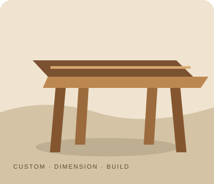

Restore
Careful repairs, finish renewal and structural attention for pieces worth keeping.
Explore restoration ↗ STILLWOODFURNITURE ATELIER · LUSAKA
STILLWOODFURNITURE ATELIER · LUSAKAA SMALL WOODWORKING STUDIO IN LUSAKA
We restore the pieces that hold a story — and build the ones you’ll keep writing in.
01 / REPAIR · 02 / REIMAGINE · 03 / MAKE

WORKSHOP STUDY · 01
THE STILLWOOD IDEA
A loose joint, a tired finish, a chair passed down through generations. Good materials and thoughtful repair can bring useful things back into the room — and back into your life.
OUR HANDS, YOUR HOME
Careful repairs, finish renewal and structural attention for pieces worth keeping.
Explore restoration ↗
Reimagining a familiar piece with a new finish, detail or purpose.
Explore reworking ↗
One-off furniture designed around your space, dimensions and everyday rituals.
Explore commissions ↗A BETTER KIND OF NEW
We look for character in grain, patina and the marks of a piece’s past. Every decision starts with the material in front of us.
Inside the workshop ↗A NOTE ON MATERIALS
“The best finish is the one that lets the wood keep being wood.”STILLWOOD WORKSHOP PRINCIPLE · FICTIONAL